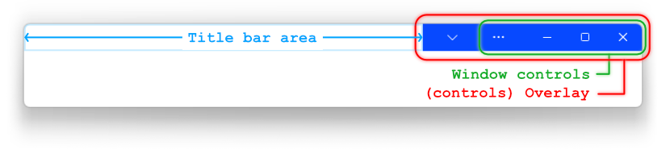

This document specifies a set of technologies that allow a Web
developer to customize the title bar of an installed web application
running in a desktop environment. These technologies are known as
Window Controls Overlay (WCO).
This draft is meant to serve as a starting point for the
standardization process of WCO and the technologies described in it
might be migrated to other specifications on different working groups.
Introduction
Applications targeting non-mobile devices are hosted within frames that
commonly have a title bar. A title bar is a UI element generally
represented as a horizontal bar at the top of a window, bearing the
name of the active program or the name of the current active document
and and the [=window controls=]. Modern applications can take advantage
of the area in the title bar in order to display UI content to create a
better UX.
For installed web apps hosted within a user agent (UA) frame, it is
possible to get some form of customization in the frame by declaring
which type of display mode is preferred. Developers can select the mode
that best meets the needs of the application via the [=manifest=]
file's `display` member. However, these modes are limited and do not
provide the same level of control over the title bar, therefore
developers looking to create an immersive, native-like title bar for
their installed application can't achieve this with the aforementioned
member. Instead, the client area begins immediately below the reserved
title bar region, which can create a cramped application space
specially on portable devices with smaller screens.
WCO enables the creation of custom title bar UI by leaving only the
[=window controls=] [=overlaid=] on the frame, in which case web
content can flow into the area previously held by the title bar.
Examples
Concepts
Window Controls Overlay: feature for installed web
applications running on non-mobile environments that allows the
viewport to expand over the [=title bar area=] using JS and CSS.
Title bar area: When WCO is enabled, this is the the
region of the window frame occupied by the title bar without the area
corresponding to the [=overlay=] that houses the [=controls of the
window=].
Window controls:
interface elements that the operating system uses consistently across
applications to enable the user to perform certain actions to control
the application. Common actions in the [=window controls=] include
minimize, maximize/restore, and close buttons.
Overlay of [=window controls=]: Area
that houses the [=controls of the window=] and is overlaid on top of
the viewport.

Extensions to the `Navigator` interface
The [[HTML]] specification defines the Navigator interface,
which this specification extends:
The `visible` attribute is a [=boolean=] that returns `true` when the
values of the {{Window/window}}.[[\TitleBarArea]] are not 0.
The getBoundingClientRect method
The `getBoundingClientRect()` method returns a DOMRect that
represents the available area for displaying web content. This
available title bar region does not include the area under the
[=window controls=] [=overlay=]. Web content should not be displayed
beneath the overlay.
The ongeometrychange attribute
The `ongeometrychange` attribute is an event handler whose
corresponding event handler event type is "change". The event is
dispatched when the [=title bar region resizes=], e.g., in
response to the UA displaying the scope's origin during the launch of
the app, an extension or feature like file access or download
displaying an icon as part of the [=window controls=] [=overlay=], or
a window [=Window/resize=].
Addition of `window-controls-overlay` to the manifest
To enable the WCO feature, a new value will be added to the
`display-override` member of the manifest file. When the
`window-controls-overlay` value is specified in the `display-override`
the user agent SHOULD extend the client area to the title bar.
The [=title bar area environmental variables=] are four env variables
that define a rectangle by the width and height from a starting point
in the viewport. This area corresponds to the available area of the
title bar, and allows to position dynamic Web content inside its
bounds.
Defining draggable sections
To define which regions or elements in the title bar are draggable,
this specification defines the CSS `app-region` property.
Algorithms
Resize the title bar area
To resize the title bar
area for a window |win|, run these steps:
If |win|'s [=overlay=] has had its width or height changed (e.g.
as a result of the user resizing the browser window, or changing the
page zoom factor, or other UI appearing or disappearing on
the [=overlay=]), since the last time these steps were run, [=fire an
event=] named `ongeometrychange` at the {{Window/window}} object and
[=update the overlay area information=].
Update the overlay area information
To update the overlay area information, run these steps:
Let |ovls| be a [=list=] of regions defined by the [=overlays=]
that house the [=window controls=] on the the window frame.
Let |tba| be an empty {{DOMRect}} object representing the
available title bar area.
If there is only one overlay region in |ovls|, set |tba| as a
{{DOMRect}} that encompasses the area from the edge of the frame
to the innermost edge of the |ovls|.
If there is more than one overlay region in |ovls|, set |tba|
to a {{DOMRect}} that encompasses the area between the
intersection of the regions in |ovls| and the [=document=]'s
viewport.
|tba|'s height should be the same as the height of the
regions in |ovls|.
Make {{Window/window}}.[[\TitleBarArea]] equal to |tba|.
Update the [=title bar area env variables=] with information from
{{Window/window}}.[[\TitleBarArea]].
Security and privacy considerations
Security
Spoofing risks
Displaying installed web apps in a frameless window leaves room for
developers to spoof content in what was previously a trusted,
UA-controlled region.
Currently in Chromium browsers, `standalone` mode includes a title
bar which on initial launch displays the title of the webpage on
the left, and the origin of the page on the right (followed by the
"settings and more" button and the window controls). After a few
seconds, the origin text disappears.
In RTL configured browsers, this layout is flipped such that the
origin text is on the left. This open the window controls overlay
to spoofing the origin if there is insufficient padding between the
origin and the right edge of the overlay. For example, the origin
"evil.ltd" could be appended with a trusted site "google.com",
leading users to believe that the source is trustworthy.
Out-of-scope Navigation
Another existing security feature for installed web apps is an
indicator of when a user has left the declared scope of the app.
When a user navigates out of scope, a black bar appears between the
title bar and the web content, and it includes the following
information:
A close button to allow users to easily navigate back into
scope
A security icon which opens the security info popup when
clicked
The origin and title of the site
With the window controls overlay enabled, if a user navigates
out-of-scope the overlay will be temporarily replaced with a
standalone title bar. When the user navigates back to into scope,
the standalone title bar will be hidden again and the overlay
displayed.
Privacy
Enabling Window Controls Overlay poses an increased fingerprinting
surface since the size of the overlay can vary depending on the OS,
the text scale, the OS font size, the OS zoom factor, and the web
content’s zoom factor.
Although this is a potential fingerprinting issue, it only applies to
installed desktop web apps that use the window controls overlay
feature and does not apply to general browser usage. Additionally,
the windowControlsOverlay API will not be available to iframes
embedded inside of an installed web app.
Acknowledgments
Huge thanks to Amanda Baker, Joshua Bell and Yoav Weiss for their
contributions to this work.